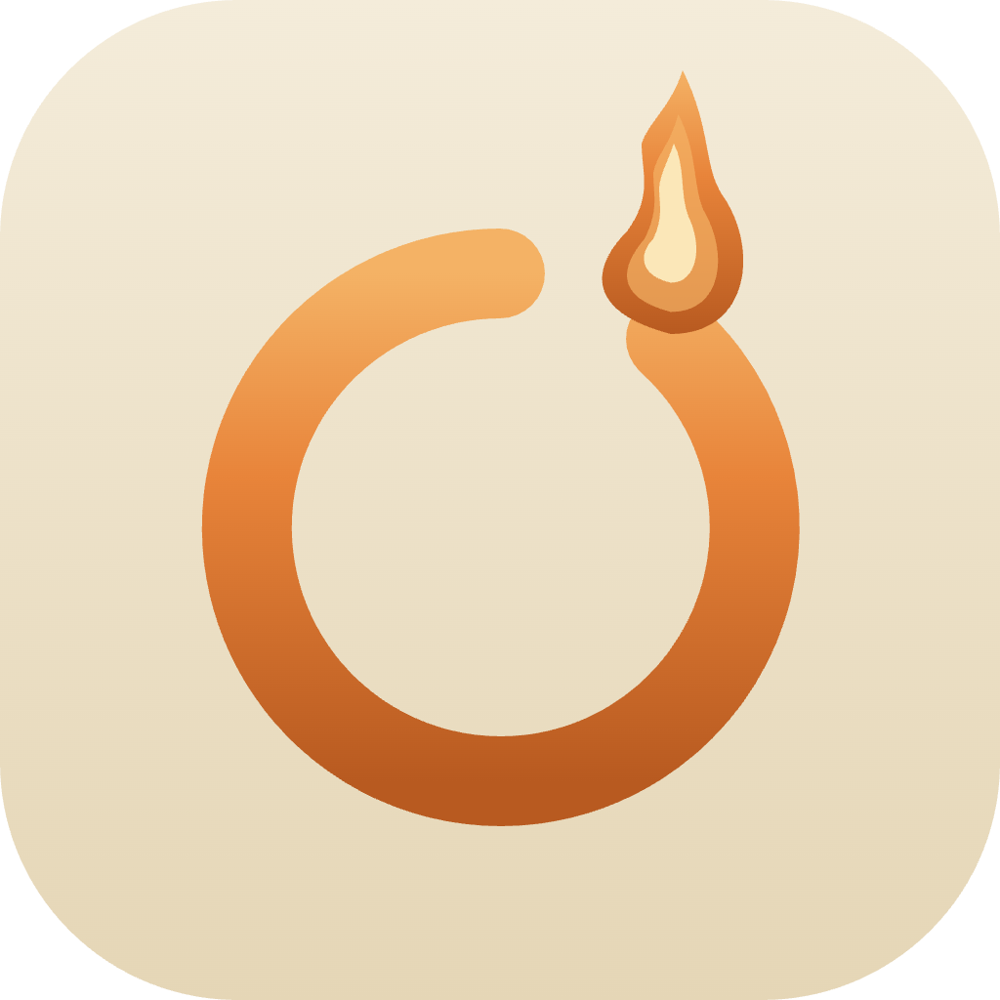

Terminal offline · sin IA · hecha para humanos
El panel izquierdo muestra tu directorio actual. Haz clic en una carpeta para navegar — la terminal se sincroniza automáticamente.
Escribe el inicio de un comando y aparecen sugerencias. En un proyecto Rust verás cargo build primero; en uno Node, npm run dev.
Al ejecutar un comando reconocido aparece una card con su descripción, flags comunes y un ejemplo. Se cierra solo o con Esc.
Toda la ayuda viene de una base de datos local. Ocote nunca hace peticiones de red. Lo que corre en tu máquina, se queda en tu máquina.
Puedes volver a ver esto en cualquier momento con Ctrl+Shift+?